MuscuTrack — itération 2 : trois hybrides Repère × Élan
Fonte est écartée. On garde la structure calme de Repère (Space Grotesk, graduations, cartes douces) et on cherche une couleur propre entre le cobalt et le magenta, moins puissante en mode clair. L’UX et toutes les règles de clarté sont inchangées.
« Je suis pas trop fan de la 1ère, ça fait trop Fitness Park. Par contre j’aime bien la 2 et la 3. Je suis d’accord sur le fait que la 2 fait trop générique et pour la 3 je trouve que le rose principal (mode blanc) est trop puissant. »
Recommandation : C · Mûre (A en second choix)
La puissance de l’accent ne se règle pas avec sa surface : le bouton principal pleine largeur de 56 px est imposé par l’UX et occupe toujours 5,5 à 6,8 % de l’écran, quelle que soit la direction. Le levier, c’est la saturation. C répond aux deux critiques à la fois. L’accent est 40 % moins saturé que le magenta d’Élan, ce qui règle le « trop puissant ». L’identité passe par l’encre aubergine, le fond teinté et le logo, ce qui règle le « trop générique ». On reconnaît l’app même là où il n’y a pas d’accent, comme sur l’écran Progrès.
A est l’option la plus sûre : c’est Repère tel quel, recoloré. B réintroduit un violet assez courant dans les produits numériques.
Puissance de l’accent en mode clair (mesurée sur les vrais écrans)
La surface d’accent visible est identique dans toutes les directions : Séances 5,5 %, mode séance 6,8 %, récap 6,1 %, Progrès 0 % du viewport 390 × 844 (aplats + contours). Elle est fixée par l’UX. Ce qui varie, c’est la saturation (chroma OKLCH, C). La « masse chromatique » vaut surface × C sur l’écran de séance : plus elle est basse, moins l’accent crie. Le contraste avec le fond reste dans tous les cas largement au-dessus de 3:1, donc la prochaine action reste évidente.
| Direction | Accent | Chroma C | Accent / fond | Texte sur accent | Masse chromatique (séance) |
|---|---|---|---|---|---|
| Actuel (orange) | #E8481C | 0,204 | 3,6:1 | 4,7:1 | 1,38 |
| Repère (cobalt) | #2347E5 | 0,239 | 6,2:1 | 6,8:1 | 1,63 |
| Élan (magenta) | #A3159A | 0,216 | 6,2:1 | 6,7:1 | 1,46 |
| A · Prune | #7E2E59 | 0,121 | 8,0:1 | 8,7:1 | 0,82 |
| B · Améthyste | #584CAD | 0,149 | 6,3:1 | 6,9:1 | 1,01 |
| C · Mûre | #75387F | 0,129 | 7,1:1 | 8,0:1 | 0,88 |
Variante A
Hybride A · Prune
Repère tel quel (Space Grotesk, règle graduée, voile sur la série en cours) avec un prune profond (#7E2E59) à la place du cobalt. Neutres gris à peine rosés.
- précis
- calme
- posé
Logo et icône
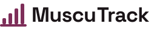
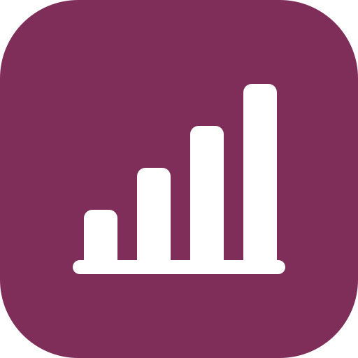
96 px · 48 pxDans l’app, le logo est monochrome (logo-app.svg, couleur du texte) : la couleur de marque ne vit que dans l’icône.
Typographie
Squat · 97,5 kg
0123456789
Space Grotesk 700 (OFL) pour les titres et les chiffres ; Inter pour le corps. Chiffres tabulaires (tnum) vérifiés. Échelle inchangée : 40 / 24 / 16 / 13.
Palette (format identity.md §6) et contrastes mesurés
| Rôle | Clair | Contraste clair | Sombre | Contraste sombre |
|---|---|---|---|---|
| Fond | #F8F5F6 | texte 16,8:1 | #100C0E | texte 17,3:1 |
| Surface (cartes) | #FFFFFF | texte 18,2:1 | #1B1518 | texte 16,0:1 |
| Texte principal | #1A1417 | 18,2:1 / surface | #F4F1F2 | 16,0:1 / surface |
| Texte secondaire | #695C63 | 5,9:1 (pire cas) | #AEA0A7 | 7,2:1 (pire cas) |
| Bordure | #E2DCDF | décor (non textuel) | #383034 | décor (non textuel) |
| Accent (prochaine action) | #7E2E59 | texte posé 8,7:1 · sur fond 8,0:1 | #E7A3C3 | texte posé 9,6:1 · sur fond 9,6:1 |
| Succès / record | #137A4B | 5,0:1 | #34C27C | 7,8:1 |
| Danger | #C62828 | 5,2:1 · texte posé 5,6:1 | #FF6B6B | 6,5:1 · texte posé 7,0:1 |
| Texte sur l’accent | #FFFFFF | 8,7:1 | #100C0E | 9,6:1 |
Voile série en cours : #FBF1F5 clair · #2E1D25 sombre — texte 16,4:1 / 14,2:1
Élément signature
La règle graduée de Repère : une graduation par exercice sous la barre de progression, des pointillés dans le graphique, des barres croissantes dans le logo et l’icône. Voile très léger (#FBF1F5) sur la série en cours.
Formes
Cartes 16 px, boutons en pilule, ombre très légère en clair.
Point de vigilance : Le prune est la teinte la plus sombre (L 0,43) : en clair, le bouton se rapproche un peu des séries faites, remplies d’encre (la coche et « Faite » les distinguent). Le voile reste perçu comme rosé.
Appliquée aux vrais écrans (390 × 844)
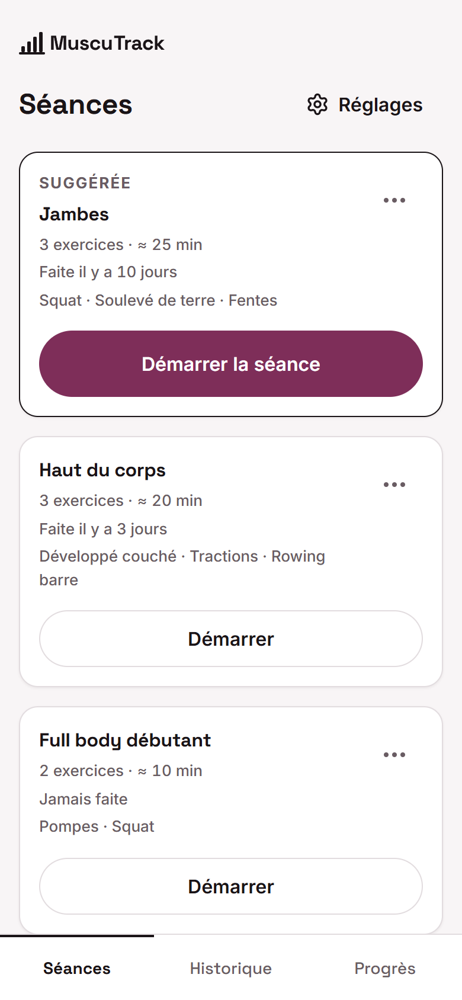
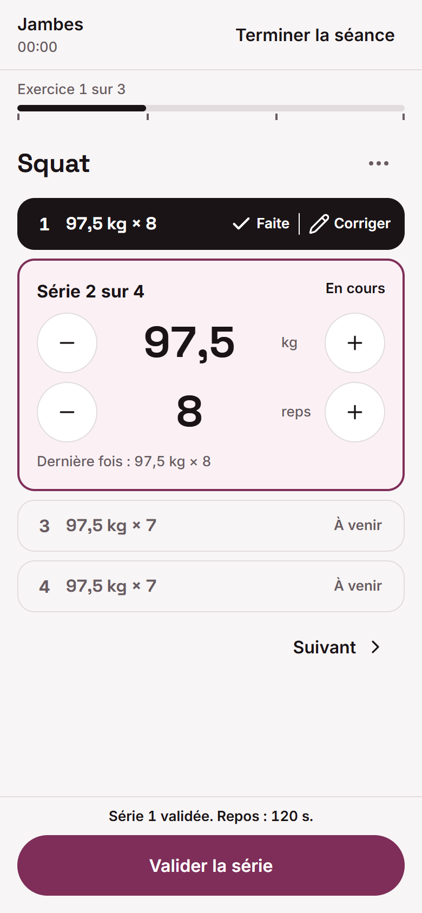
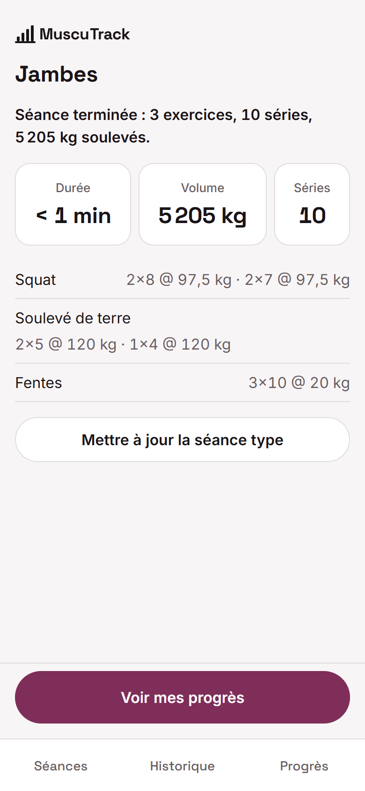
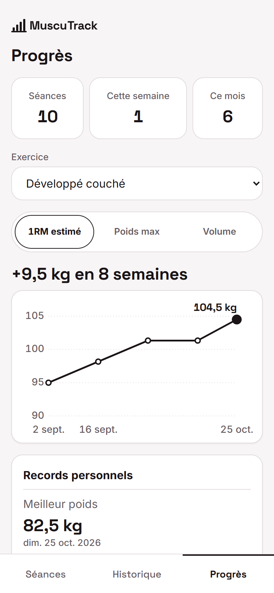
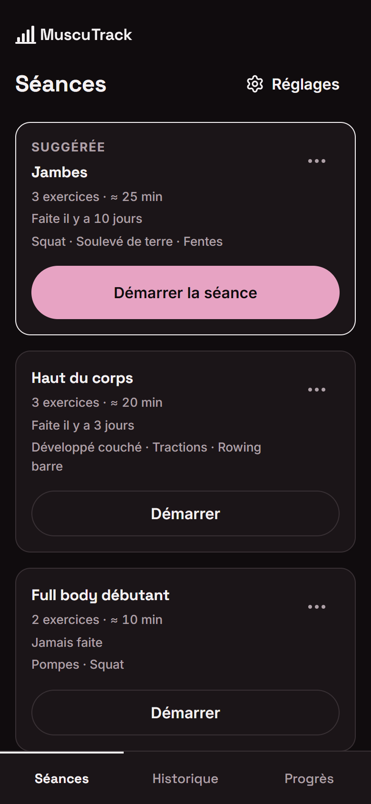
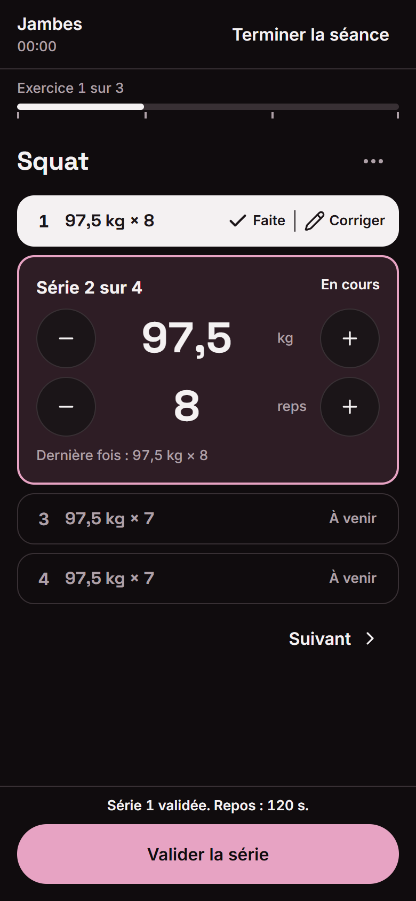
Jetons : docs/brand/hybride-a/tokens.css
Variante B
Hybride B · Améthyste
Structure Repère, violet désaturé (#584CAD) et la pente de 12° d’Élan réservée à deux endroits : les crans de progression et le logo. Neutres gris froid.
- vif
- net
- moderne
Logo et icône
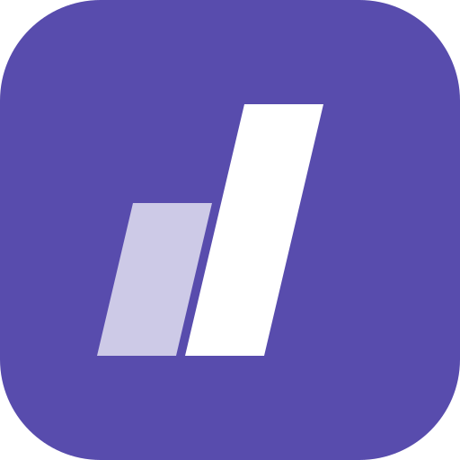
96 px · 48 pxDans l’app, le logo est monochrome (logo-app.svg, couleur du texte) : la couleur de marque ne vit que dans l’icône.
Typographie
Squat · 97,5 kg
0123456789
Space Grotesk 700 (OFL) pour les titres et les chiffres ; Inter pour le corps. Chiffres tabulaires (tnum) vérifiés. Échelle inchangée : 40 / 24 / 16 / 13.
Palette (format identity.md §6) et contrastes mesurés
| Rôle | Clair | Contraste clair | Sombre | Contraste sombre |
|---|---|---|---|---|
| Fond | #F5F5FA | texte 17,0:1 | #0B0B12 | texte 17,4:1 |
| Surface (cartes) | #FFFFFF | texte 18,5:1 | #161620 | texte 15,9:1 |
| Texte principal | #13131C | 18,5:1 / surface | #F1F1F6 | 15,9:1 / surface |
| Texte secondaire | #5E5E71 | 5,8:1 (pire cas) | #A5A5BA | 7,4:1 (pire cas) |
| Bordure | #DDDDE6 | décor (non textuel) | #31313F | décor (non textuel) |
| Accent (prochaine action) | #584CAD | texte posé 6,9:1 · sur fond 6,3:1 | #ADAAF8 | texte posé 9,2:1 · sur fond 9,2:1 |
| Succès / record | #137A4B | 4,9:1 | #34C27C | 7,8:1 |
| Danger | #C62828 | 5,2:1 · texte posé 5,6:1 | #FF6B6B | 6,5:1 · texte posé 7,1:1 |
| Texte sur l’accent | #FFFFFF | 6,9:1 | #0B0B12 | 9,2:1 |
Élément signature
La pente dosée : barre de progression en crans biseautés (un par exercice), double barre oblique dans le logo et l’icône. Nulle part ailleurs : pas d’étiquettes en biais.
Formes
Cartes 14 px, boutons en pilule. Pas de voile sur la série en cours, seulement un contour violet.
Point de vigilance : Le violet-indigo est la couleur de beaucoup de produits numériques (outils SaaS, paiement) : le risque de faire « générique » revient, en moins fort que le cobalt. C’est la variante la plus « couleur » des trois (C = 0,15).
Appliquée aux vrais écrans (390 × 844)
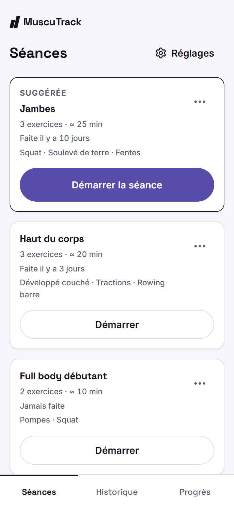
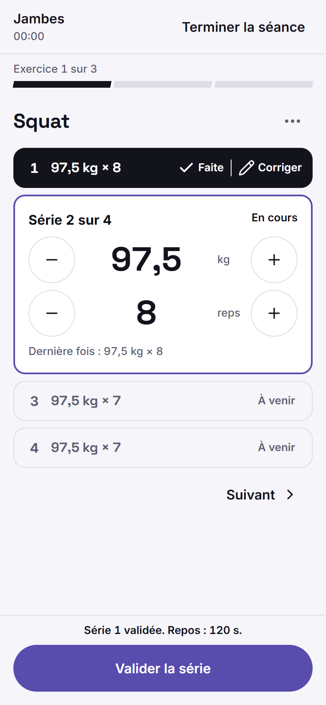
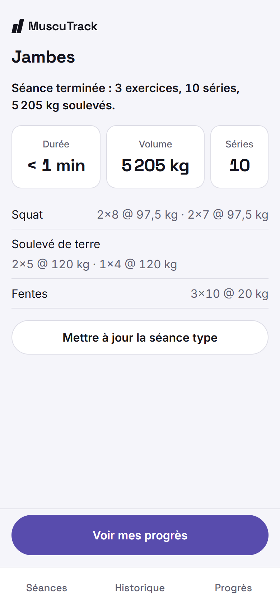
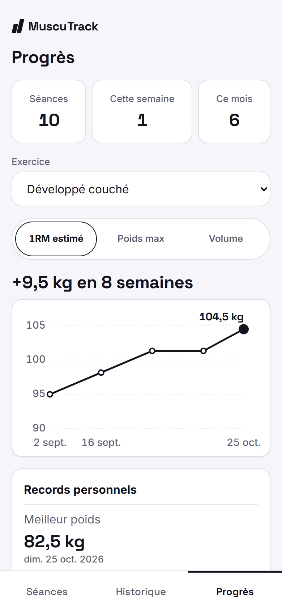
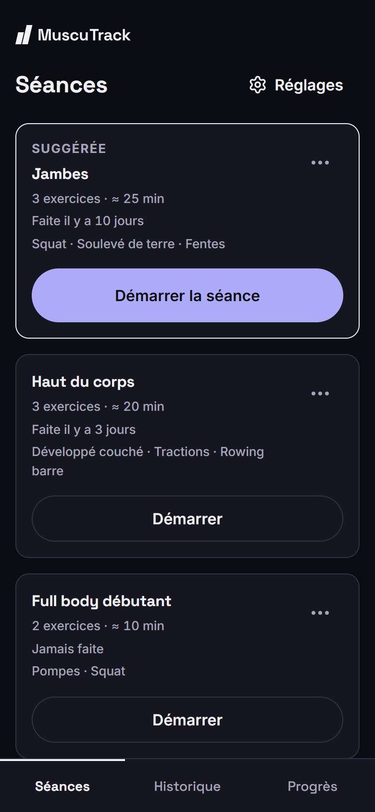
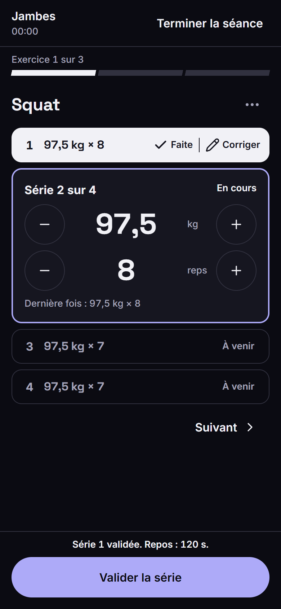
Jetons : docs/brand/hybride-b/tokens.css
Variante C
Hybride C · Mûre
Proposition du designer : la marque vit dans l’encre, pas dans l’accent. Tout l’écran est un camaïeu d’une seule teinte (mûre) : fond lavande pâle, encre aubergine (#24162E) pour le texte, les séries faites, la barre et la courbe. L’accent (#75387F) n’est que l’échelon saturé de cette teinte.
- calme
- précis
- chaleureux
Logo et icône
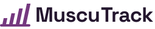
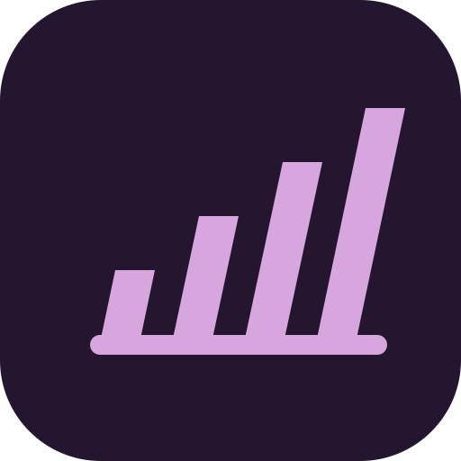
96 px · 48 pxDans l’app, le logo est monochrome (logo-app.svg, couleur du texte) : la couleur de marque ne vit que dans l’icône.
Typographie
Squat · 97,5 kg
0123456789
Space Grotesk 700 (OFL) pour les titres et les chiffres ; Inter pour le corps. Chiffres tabulaires (tnum) vérifiés. Échelle inchangée : 40 / 24 / 16 / 13.
Palette (format identity.md §6) et contrastes mesurés
| Rôle | Clair | Contraste clair | Sombre | Contraste sombre |
|---|---|---|---|---|
| Fond | #F6F0FB | texte 15,3:1 | #100B14 | texte 17,3:1 |
| Surface (cartes) | #FFFFFF | texte 17,1:1 | #1C1521 | texte 15,8:1 |
| Texte principal | #24162E | 17,1:1 / surface | #F4F0F7 | 15,8:1 / surface |
| Texte secondaire | #655771 | 6,0:1 (pire cas) | #B1A6B9 | 7,7:1 (pire cas) |
| Bordure | #DFD7E6 | décor (non textuel) | #3A3141 | décor (non textuel) |
| Accent (prochaine action) | #75387F | texte posé 8,0:1 · sur fond 7,1:1 | #D8A6DF | texte posé 9,7:1 · sur fond 9,7:1 |
| Succès / record | #137A4B | 4,8:1 | #34C27C | 7,8:1 |
| Danger | #C62828 | 5,0:1 · texte posé 5,6:1 | #FF6B6B | 6,4:1 · texte posé 7,0:1 |
| Texte sur l’accent | #FFFFFF | 8,0:1 | #100B14 | 9,7:1 |
Encre aubergine (texte, séries faites, courbe) : #24162E clair · #F4F0F7 sombre — 15,3:1 sur le fond
Élément signature
L’encre aubergine et la règle penchée : un seul motif réunit les deux directions aimées, des graduations croissantes inclinées à 12°, utilisé seulement dans le logo et l’icône. Dans l’app, la progression est en crans droits, en encre.
Formes
Cartes 16 px, boutons en pilule, ombre très légère. Icône sur fond aubergine : la seule icône sombre, très reconnaissable sur l’écran d’accueil.
Point de vigilance : Le fond (#F6F0FB) est légèrement teinté mais visible : l’app ne sera plus d’un blanc neutre. À valider sur un écran mal calibré ou en plein soleil.
Appliquée aux vrais écrans (390 × 844)
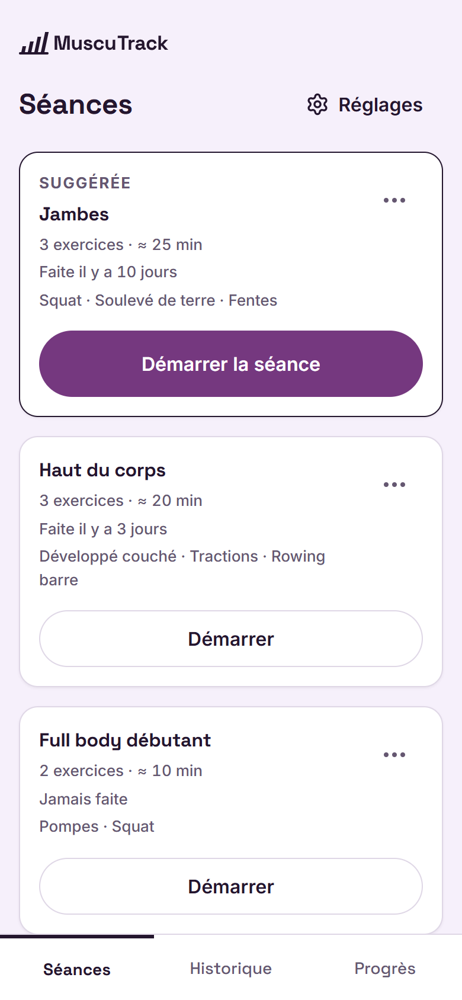
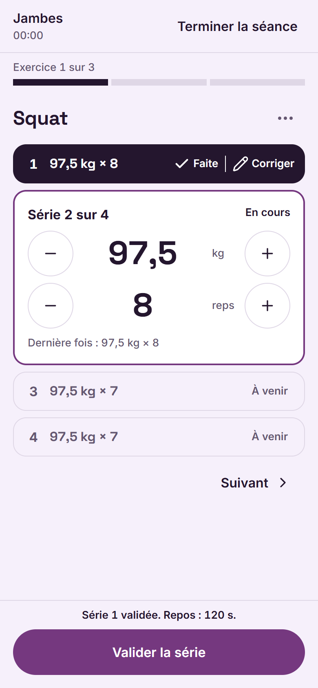
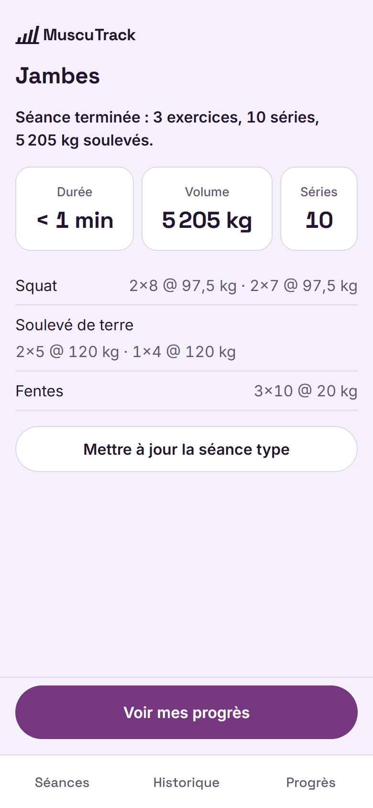
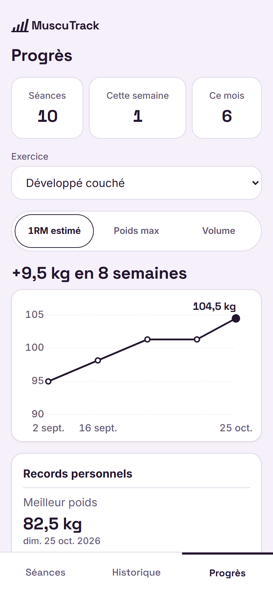
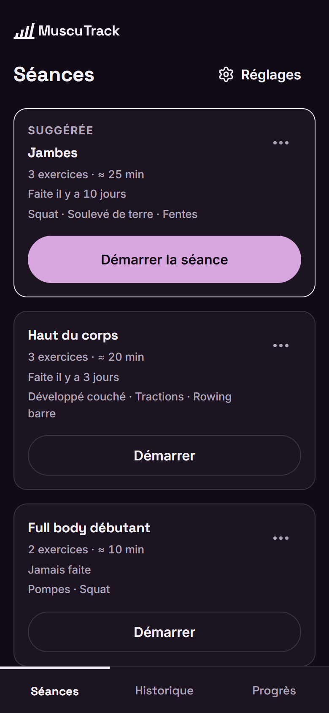
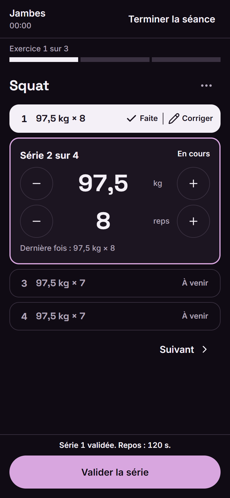
Jetons : docs/brand/hybride-c/tokens.css
Référence (itération 1)
Repère
Itération 1 : la structure appréciée, mais un bleu trop générique.


Référence (itération 1)
Élan
Itération 1 : l’énergie appréciée, mais un magenta trop puissant en clair et une police trop large.


Captures réalisées sur l’app réelle (localhost, 390 × 844, données réalistes) en injectant tokens.css et le logo, sans modifier le code. La durée « < 1 min » du récap vient de la séance jouée par le robot.